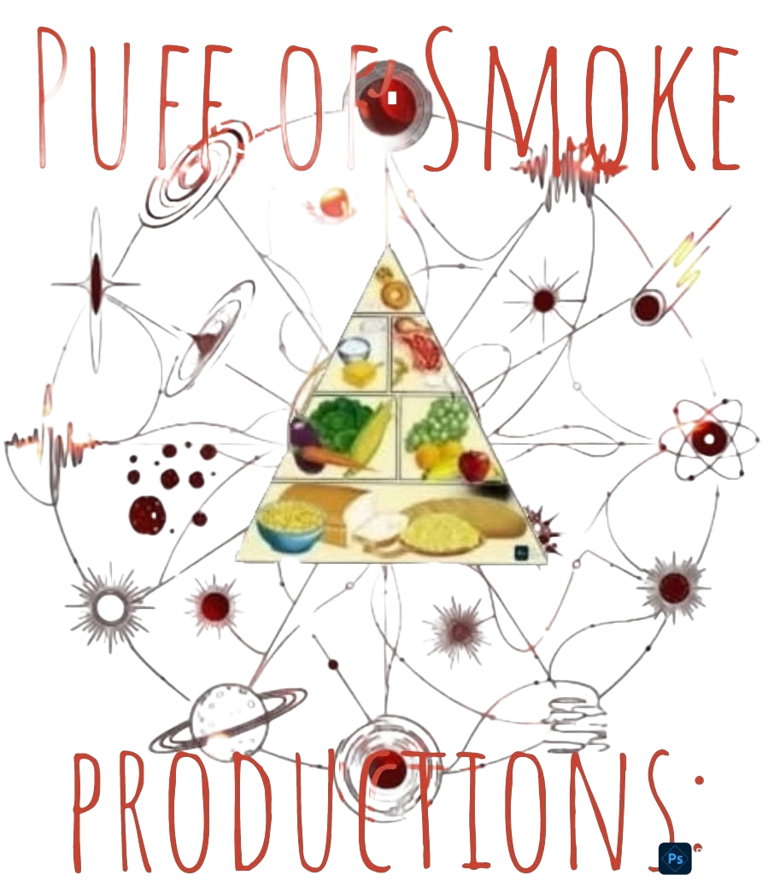

Welcome!
This goal here is not to excell, but rather to sustain. True health is not a crown you wear on your head. Nor is it found in the glow of joy—or the fond tickles of happiness. Good health is not punishing, nor is it painful. It is a rather natural state, of even feeling nothing, except sure growing abilities. Good health is not distracting or complicated. Things like happiness, strong, or resourceful get complicated. Rather true health is the real foundatiom all that builds on, along with so much other as the years acclimate.

There is so much more to life! then the borings of good health. Yet there is no life heavenly or lasting without it. Good health is foundational, important, necessary, and critical, most exclusively over the calculations of years. Yet it is rather simple and often unnoticeable today, from the ease of time's evolution. Yet its simplicity can get lost or confused in time, from our urges, our desires, or just conflicting data from all the destinies mankind would endeavor. Over the years it can be hard to keep your "feet on the ground", especally when it comes to good health practices.
The Expectations:
So we are creating this resource for everyone and worldwide. As a bedrock of basic information only to proven health practices, for any age that needs solid factual advice. So they may better ground their healthy futures in scientifc, testable, and minimal necessities, for proven long-standing. With then minimal efforts of healthy knowledge, one can build the strength, the courage, and the widom, to steady on any "heavenly" goal. Yet first we hope this minimal data base of critical facts to maintaining only good health, serves as some benefit over the confusions today. And while all solutions may not be the best for everyone, we do hope even just recollection of simplicities lost, has us all working on a better future, for our health.
The Interest:
This website was inspired and designed by "Puff Of Smoke" productions. WebMaster A.D. initially, and will be open for public input and record of useful facts, once the initial stages are solidified and operational. Created in 2025 from decades of study, it could likely take years to fulfill. Yet one step at a time will add up better then yesterday. If you would like to contact us with comments or suggestions, especially unique facts to add; then please, feel free to e-mail us at delislesr(at)gmail(dot)com. No automated messages please.
Mental Health:
We believe the only automation necessary should be good health. For every human at every age! And we effort here that wish for you. So wish us luck!
Healthy Diet:
The Exercising:
|